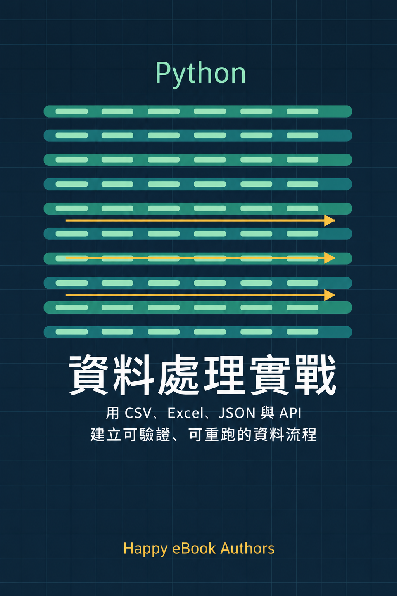

電子書
Python 資料處理實戰
用 CSV、Excel、JSON 與 API 建立可驗證、可重跑的資料流程

Python 資料處理實戰
用 CSV、Excel、JSON 與 API 建立可驗證、可重跑的資料流程
學過基本 Python，卻不知道如何把 CSV、Excel、JSON 與 API 整理成可靠的資料流程？ 《Python 資料處理實戰》以「晴日商店」合成資料為連續案例，帶你從檔案讀寫、型別與缺值處理開始，逐步完成資料清理、Schema 驗證、Excel 報表、JSONL 批次處理、API 同步與每日資料管線。 本書不只示範成功案例，也實際處理缺檔、格式錯誤、重複資料、API 404／503、輸出衝突與產物竄改。每章均提供可執行命令、預期輸出、退出碼、錯誤案例、驗證清單與練習題。